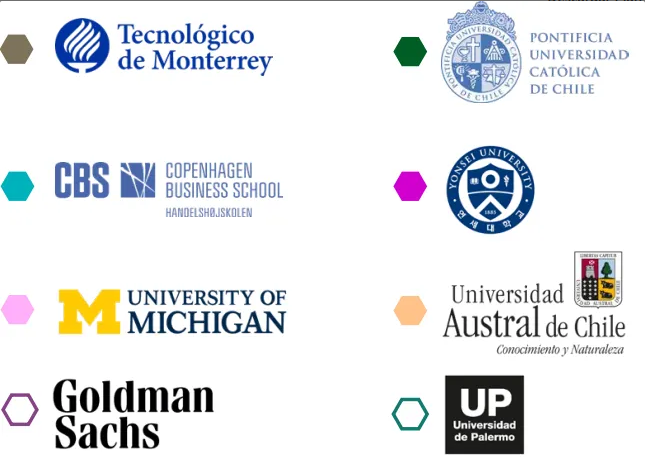

Actuaría (Nueva)
No Aplica EQ
Negocios
📊 Licenciatura en Actuaría (NUEVA)
⏳ Duración: 4 años (12 cuatrimestres)
🛡️ Modalidad: 100% en línea
🌟 Forma parte de los profesionales del futuro.
En UVM te preparamos con herramientas avanzadas para:
- Analizar y modelar datos estratégicos.
- Evaluar riesgos financieros y actuariales.
- Tomar decisiones basadas en técnicas estadísticas de vanguardia.
🌎 Inscríbete y Obtén: Certificaciones Internacionales + Cursos UVM GO! Beyond sin costo.
📚 Plan de Estudios: Descargar
Oportunidades Laborales
- 📌 Actuario en Seguros: Salario competitivo, empresas aseguradoras.
- 📌 Analista de Riesgos: Trabajo en bancos y consultorías financieras.
- 📌 Científico de Datos: Industria tecnológica y análisis de Big Data.
- 📌 Consultor Financiero: Asesoramiento a empresas nacionales e internacionales.
Certificaciones Internacionales
Obtén certificaciones reconocidas a nivel internacional para mejorar tu perfil profesional.
